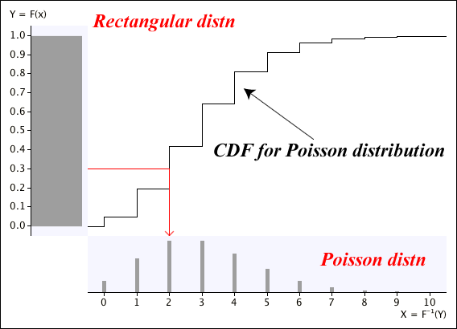

Computer simulations consist of realisations of models for real-life scenarios. These models involve distributions, so simulations require values that are randomly generated from the distributions. These random values are usually generated on a computer with some algorithm. Strictly speaking, these should be called pseudo-random values but will simply be called random values here.
The basis of generating random values from a distribution is usually an algorithm that generates a random value from a \(\RectDistn(0, 1)\) distribution. For example, Excel has a function to generate one such value:
=RAND()
The relationship between a \(\RectDistn(0, 1)\) distribution and one with cumulative distribution function \(F(x)\) can be used to generate a random value from an arbitrary distribution.
Random values from an arbitrary distribution
If \(y\) is a random value from a \(\RectDistn(0, 1)\) distribution, then \(F^{-1}(y)\) is a random value from the distribution with cumulative distribution function \(F(x)\).
Excel has built-in functions to evaluate \(F^{-1}(y)\) for several common distributions, including the following ones.
| Distribution | \(F(x)\) | \(F^{-1}(y)\) |
|---|---|---|
| \(\NormalDistn(0, 1)\) | =NORM.S.DIST(\(x\), true) | =NORM.S.INV(\(y\)) |
| \(\NormalDistn(\mu, \sigma^2)\) | =NORM.DIST(\(x\), \(\mu\), \(\sigma\), true) | =NORM.INV(\(y\), \(\mu\), \(\sigma\)) |
| \(\GammaDistn(\alpha, \lambda)\) | =GAMMA.DIST(\(x\), \(\alpha\), \(\frac 1{\lambda}\), true) | =GAMMA.INV(\(y\), \(\alpha\), \(\frac 1{\lambda}\)) |
For example, a random value from a \(\NormalDistn(\mu = 10, \sigma^2 = 4)\) distribution can be generated in Excel by typing the following into a spreadsheet cell:
=NORM.INV(RAND(), 10, 2)
Generating values from a discrete distribution
Although the methodology above is easiest to explain for continuous random variables, it can also be used to generate random numbers from discrete distributions.
Excel only has a function for the inverse of the binomial distribution's CDF. Typing the following into a spreadsheet cell generates a random value from a binomial distribution:
=BINOM.INV(\(n\), \(\pi\), RAND())
The method can however be applied to other discrete distributions too.
Example: Generating values from a Poisson distribution
The diagram below shows the cumulative distribution function for a \(\PoissonDistn(\lambda = 3)\) distribution — a step function. From a randomly generated \(Y\) with a \(\RectDistn(0, 1)\) distribution, you would read across and down to find a random value from the discrete \(\PoissonDistn(\lambda = 3)\) distribution.
